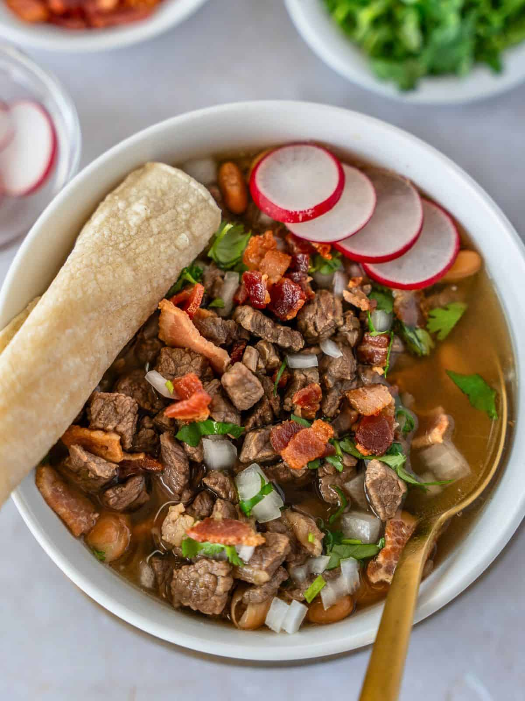

Carne en su Jugo

Description
Carne en su jugo is a Guadalajara favorite. Small pieces of flank steak are cooked in their juices, then mixed with whole beans and crispy crumbled bacon. It makes me feel at home!
Ingredients
- 3 pounds beef, thinly sliced
- 1 Pack cooked bacon
- 12 small or 7 large Tomatillos
- 15 cilantros
- 2 diente de Ajo
- 8 cebollitas
- 1 Cebolla
- 1.5 pinch comino
- 1.5 bote de frijole
- 2 cans sweet corn (optional)
Steps
- 1. Make the salsa by combining the cilantro, tomatillos, ajo, and cebolla
- 2. Cook the beef and cebollitas
- 3. Combine salsa with cooked beef. Simmer for 20 minutes
- 4. Add cooked bacon, frijoles, and corn
- 5. Portion and serve